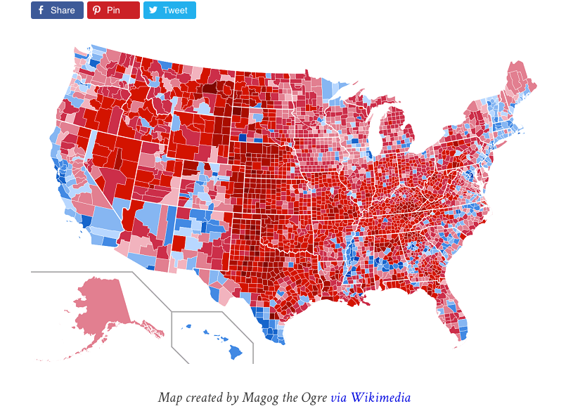

Welcome to class!
Maps and Spatial Data
Case Study Sharing
Geospatial Data
Is the earth flat?
Kyrie Irving was trending on Twitter today because he believes the Earth is flat. I asked him about it. pic.twitter.com/ODe9aP9qmK
— Arash Markazi (@ArashMarkazi) February 18, 2017
Do people believe him?
Uh oh: Draymond is a Flat Earth/Kyrie Truther. pic.twitter.com/icJThyG7hx
— The Crossover (@TheCrossover) February 18, 2017
Which area is larger?
The continental 48 states or the country of Brazil?
- Answer
- Is education teaching us stuff that isn’t true?
- Boston has concerns about our map education
When we make a map, what is our goal?
- Your goal will change which projection you use.
- Can you make an accurate map?
- Why all world maps are wrong
Maps Vs. Variables
What is wrong?

Montana-Manhattan Problem

How could we spatially depict the variable of interest?
Different views of the 2016 election numbers
Geospatial data in R
sp and sf
In R, there are two main lineages of tools for dealing with spatial data: sp and sf.
sphas been around for a while, but is complex and difficult to usesfwas first released in 2016. Much easier to use with the tidyverse
USAboundaries
The USAboundaries package contains functions that return sf files for US states, counties, and cities.
Demo
Start by installing the packages:
install.packages("sf")
install.packages("USAboundaries")Demo
idaho <- us_states(states = "Idaho")
View(idaho)What do you notice about the structure of the data?
Demo
plot(idaho$geometry)
ggplot() + geom_sf(data = idaho)